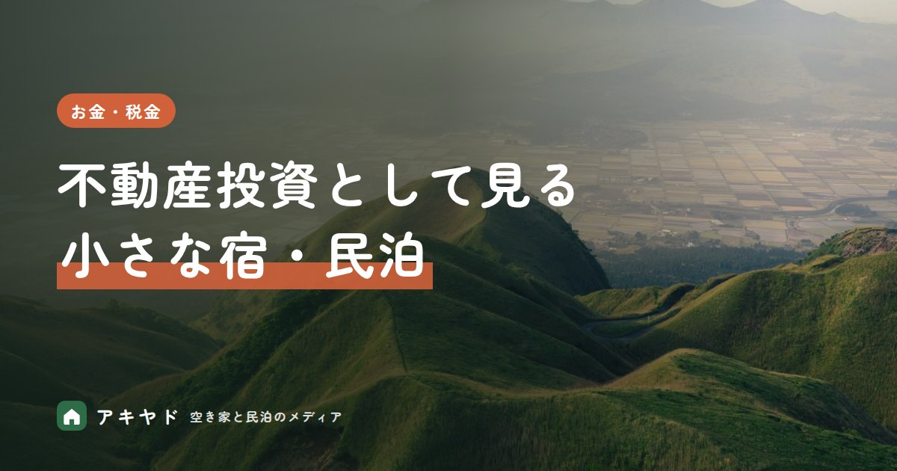

不動産投資として見る小さな宿・民泊｜賃貸との違いと、利回りを見るときの注意点
公開日
更新日
読了目安 約6分
執筆：アキヤド編集部
監修：石原 佑真

家を人に貸す賃貸は毎月ほぼ同じ家賃が入りますが、小さな宿・民泊は部屋の埋まり具合と料金で収入が動きます。下田で始めた宿の試運転3か月の実績などから、賃貸との差が何で決まるのかを整理します。
この記事のポイント
- 宿の収入は月ごとに波があるため、賃貸のように毎月同じ額は見込めません。稼働率（部屋が埋まっている割合）×客室単価（1室1泊の料金）で動き、売上の半分以上は運営費で出ていきます。
- 利益の目安は、売上ではなく営業利益で見ると、手元に残る額がつかめます。下田の一例では、3か月の売上約100万円に対し営業利益は約45万円で、試運転3か月の数字です（通年の実績ではありません）。営業利益は売上から運営費を引いた残りです。
- 賃貸より多く残るかは、立地と運営の力で大きく変わります。同じ宿でも、月の稼働率は33%から71%まで動きました。
- 比べる前に手間と初期投資の回収を入れて計算すると、見込み違いを防げます。手間は人件費として数え、収入は少なめに見積もり、稼働が下がる月も見ておきます。
賃貸と宿は、何が違うのか？
宿の収入は月ごとに波があるため、賃貸のように毎月同じ額は見込めません。収入は稼働率×客室単価で動き、下田の一例では売上の半分以上が運営費で出ていきました。
収入の仕組みの違いは、「民泊と賃貸、収入の仕組みの違い」で説明しています。
宿の売上のうち、実際にどれだけ残ったのか？
利益の目安は、売上ではなく営業利益で見ると、手元に残る額がつかめます。営業利益は、売上から運営費を引いた残りです。
創業メンバーが個人事業として始めた、下田市の一棟貸し（建物まるごと貸す形）の宿（運営施設の一例）の実績です。物件は他者から借りています。開業から最初の3か月は本格稼働前の試運転期間で、フル稼働の数字ではありません。
月の運営費は計18万円でした。内訳は、家賃5万円、清掃委託2万円、予約サイトの手数料などのシステム利用料8万円、光熱水費・Wi-Fi・消耗品など3万円です。売上が増えても、手数料と清掃は一緒に増えます。
※ 試運転期間の値で、通年や本格稼働後の実績ではありません。営業利益は、運営する人の人件費と初期投資（改修と家具・家電・備品で約650万円）を含みません。同じ数字になることを約束するものではありません。
開業から1年目・2年目の数字は、「借りた家を宿にした1年目の運営事例」で紹介しています。
取材したオーナーの例です。Eさんは、賃貸マンションを借りて民泊にし、初期費用約200万円で、月の純利益は12万〜15万円（本人の申告。範囲は事例ごとに違います）でした。詳しくは「会社員の民泊副業｜賃貸で始め、月の純利益12〜15万円・作業は週1〜2時間の事例」で紹介しています。
利回りは、運営費を引くとどう見えるのか？
不動産投資でよく使う表面利回りは、売上を投資額で割ったものです。宿は売上の半分以上が運営費で出ていくため、表面利回りだけを見ると、手元に残る額を高く見誤ります。比べるのは、運営費を引いた収益を投資額で割った実質的な利回りです。
宿の利回りは「運営費を引いて」見る
実質利回り1年間＝（売上宿泊料金の合計−運営費手数料・清掃・光熱費など）÷投資額取得費・改修費など
宿は賃貸より運営費が大きいため、売上だけで見ると利回りを高く見誤ります。
上の宿では、試運転3か月の売上約100万円が、運営費を引くと営業利益約45万円になりました。試運転の3か月を12か月に引き延ばして利回りを出すと、実際より良く見えるおそれがあるため、この記事では計算していません。固定資産税（家や土地を持つと毎年かかる税）・保険・修繕の積立も、物件を持つ場合は別に見ます。
賃貸より多く残るかは、何で決まるのか？
賃貸より多く残るかは、立地と運営の力で大きく変わります。同じ宿でも、1年目の月別の稼働率は33%から71%まで動きました。差を動かした要素を、同じ宿の実績から並べます。
※ 1年目は2025年7月中旬〜2026年3月の約8.5か月分。2年目上半期は2026年4〜9月。いずれも同じ宿の実績で、別の物件で同じ結果になるとは限りません。
賃貸との差は、立地と運営で大きく変わります。立地は需要と客層を、運営は料金・清掃・固定費の持ち方を決めます。
賃貸に出した場合と、数字でどう比べるのか？
比べる前に、手間と初期投資の回収を入れて計算すると、見込み違いを防げます。手間は人件費として数え、収入は少なめに見積もり、稼働が下がる月も見ておきます。
この宿の物件の家賃は、月5万円で固定です。ただしこの金額が、この家を一般の賃貸に出した場合の相場とは限りません。一方、宿を運営した側は、その家賃を払ったうえで、試運転3か月で営業利益が約45万円（人件費を除く月平均で約15万円）でした。
ただし、並べるときは次の点を一緒に見ます。
- 運営する人の手間と人件費は、営業利益に入っていません。
- 改修と家具・備品で約650万円の初期投資がかかっています。
- 1年目には、稼働率が33%の月や、備品の買い替えで赤字の月もありました。利回りは、年間の合計で見て、悪い月を含めた収支で判断するのが前提です。
賃貸側の需給も、地域で違います。令和5年住宅・土地統計調査では、下田市の賃貸用の空き家は約1,230戸、静岡県全体では約144,400戸でした（推計値）。賃貸に出しても借り手が付くとは限らず、地域の賃貸の相場は、不動産会社などで確かめる必要があります。この記事では、公的に確認できた相場の数字がないため、家賃の水準は載せていません。
宿泊の需要は、どう動いているのか？
静岡県の延べ宿泊者数は、2022年度から2024年度にかけて増えています。
※ 観光庁「宿泊旅行統計調査」（総務省「社会・人口統計体系」収録値、e-Stat）。県全体の推移を見るための値で、観光庁が発表する全施設の合計とは一致しません。個々の宿の稼働を示す数字ではありません。
需要が伸びている地域でも、宿ごとの稼働は、物件の立地や客層との相性で分かれます。この宿は、外国人の長期滞在者を主な客層にして、駅から徒歩10分ほどの場所で運営しています。
収益が変動するリスクには、どう備えるのか？
- 需要の変動：季節や天候、景気で、旅行者が減る時期が出ます。上の宿でも、11月と1月は3割台でした。
- 競合の増加：周辺に宿が増えると、料金や稼働率が下がることがあります。
- 制度の変更：条例の改正や宿泊税の導入は、収益に響きます。
- 建物の修繕・備品の買い替え：まとまった出費が出る月に備えて、資金を確保します。
備えとして、季節や曜日に合わせた料金設定、連泊・長期滞在の受け入れ、複数の予約チャネル（予約を受ける窓口）の活用があります。稼働率が想定より下がっても続けられるか、保守的な前提で試算しておきます。季節の波は、「閑散期をどう乗り越える？」で説明しています。
まとめ：賃貸と比べるなら、何を並べればよいのか？
宿が賃貸より多く残るとは、言い切れません。下田の一例では、試運転3か月で売上の約45%が営業利益として残りましたが、手間と初期投資は別にかかっています。比べるときは、①賃貸に出した場合の家賃、②宿の営業利益から自分の手間を引いた額、③初期投資の回収期間、の3つを並べてください。
※ 本記事の数値は、公開日時点で公表されている資料と、創業メンバーが運営する宿の実績にもとづきます。
よくある質問
Q賃貸と宿、どちらが儲かりますか？
Aどちらが上とは言い切れません。下田の一例では、家賃を払ったうえで試運転3か月の営業利益が約45万円でしたが、人件費と初期投資は含みません。賃貸の家賃、宿の営業利益から手間を引いた額、初期投資の回収期間を並べて比べてください。
Q運営を任せた場合、手元に残る額はどう変わりますか？
A委託する業務の範囲と費用の方式で変わります。売上の一定割合を支払う方式が多いため、委託費を差し引いた額で試算してください。清掃だけでも、この宿の1年目では売上の約16%でした。
Q投資の前に何を確認すべきですか？
A法令上営業できるか、周辺の宿泊需要と競合、建物の状態と改修費、運営の体制の4点です。あわせて、賃貸に出した場合の家賃も確かめてください。
参考資料（4件）
※ 本記事の数値・制度は公開日時点で公表されている資料にもとづきます。最新の情報は各機関の発表をご確認ください。